10. 헤르난 코르테스
스페인 제국
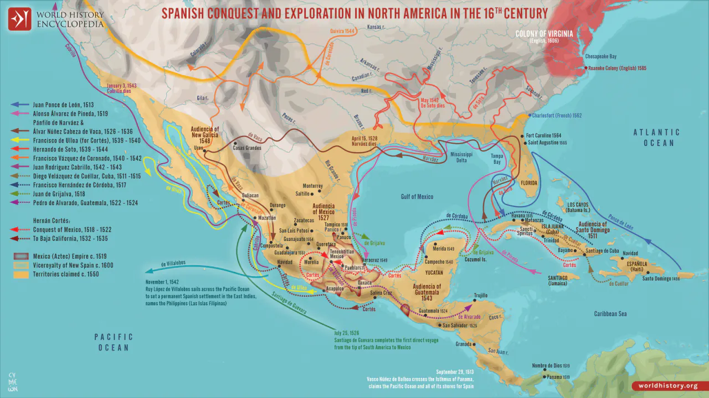
82만 km²
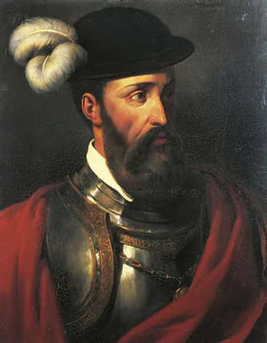
9. 프란시스코 피사로
스페인 제국
124만 km²
8. 가즈니의 마흐무드
가즈나 제국
176만 km²
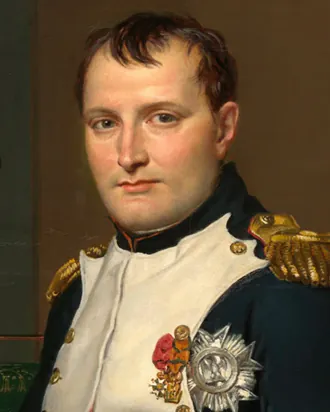
7. 나폴레옹 보나파르트
프랑스 제국
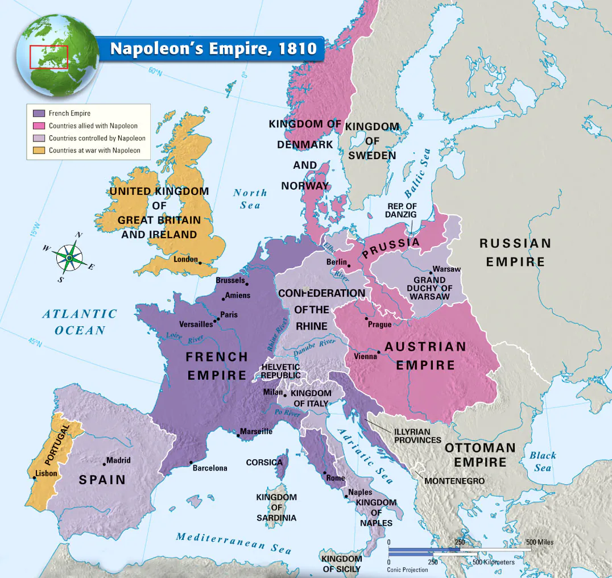
186만 km²
6. 아돌프 히틀러
나치 독일
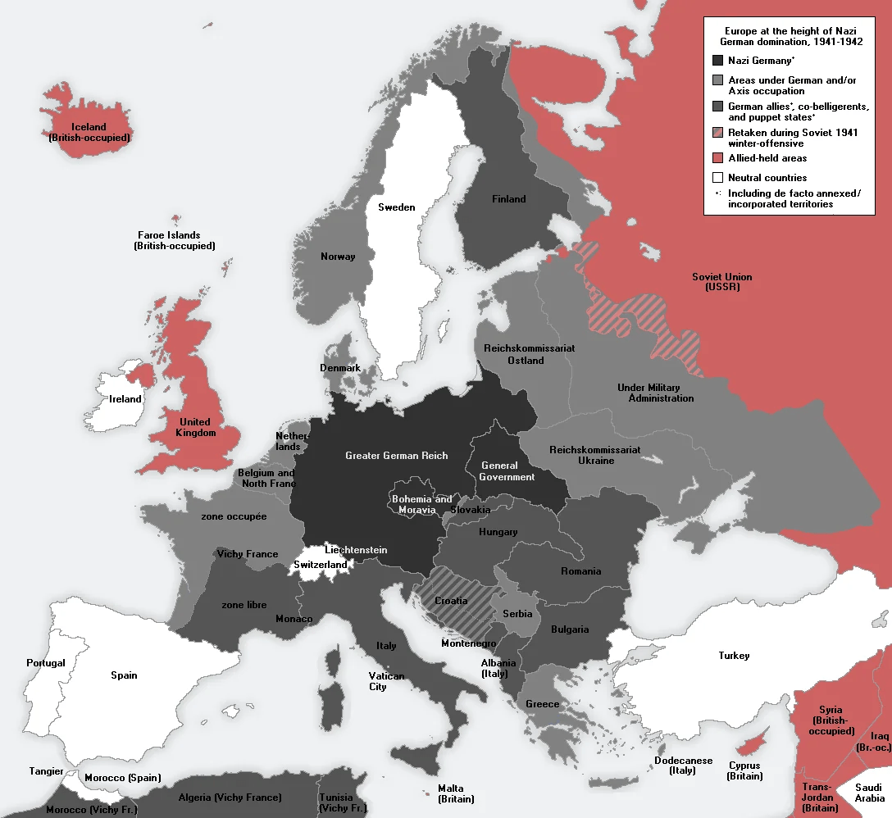
355만 km²
5. 훈족의 아틸라
훈 제국
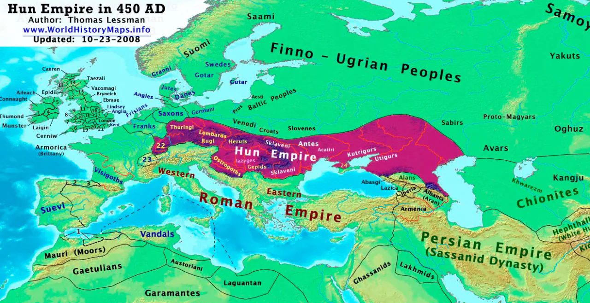
376만 km²
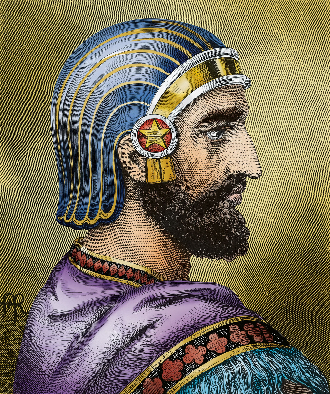
4. 키루스 대왕
아케메네스 제국
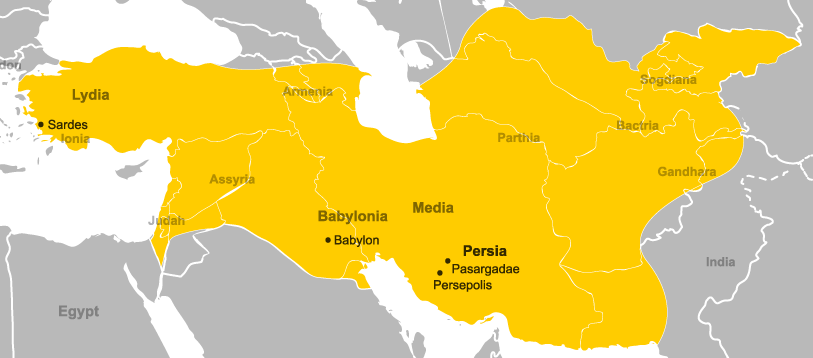
541만 km²
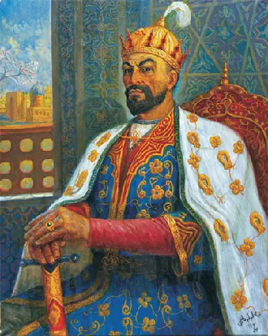
3. 티무르
티무르 제국
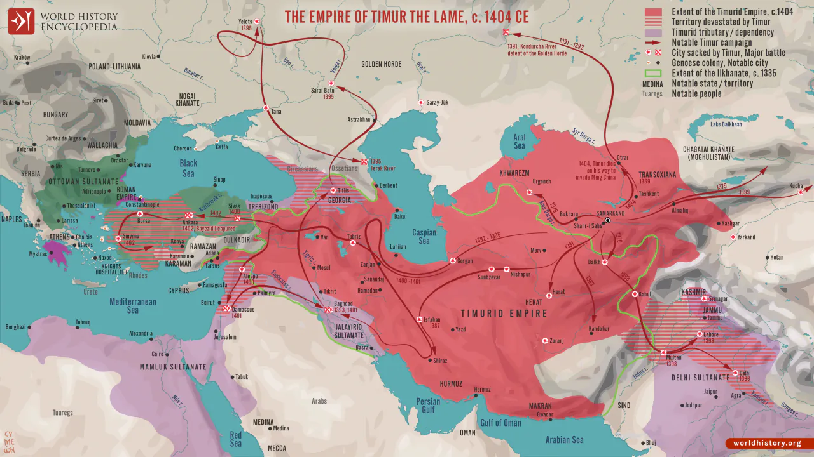
556만 km²
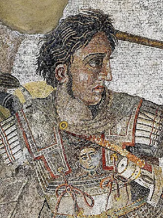
2. 알렉산드로스 대왕
마케도니아 제국
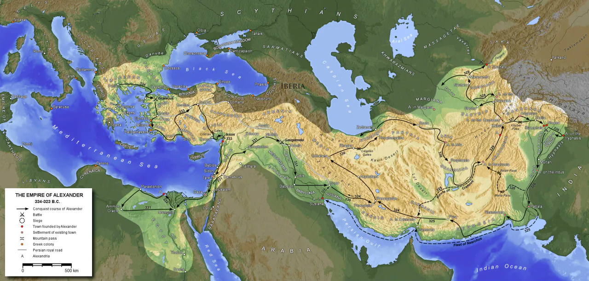
565만 km²
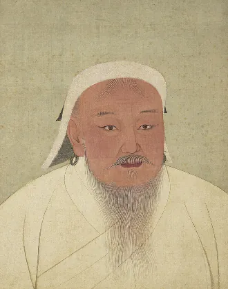
1. 칭기즈 칸
몽골 제국
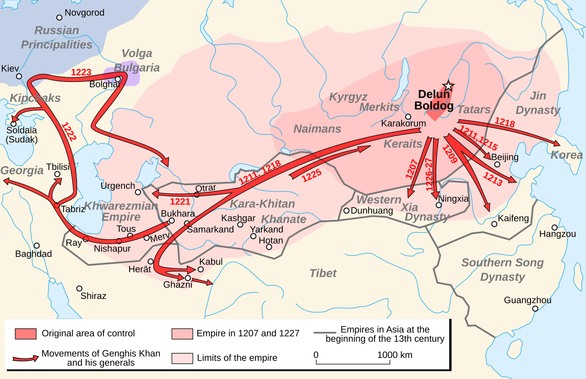
1259만 km²
과거 제국이라고 하던 나라들은 현대에 들어서 빛을 잃었다고 봐야하나?